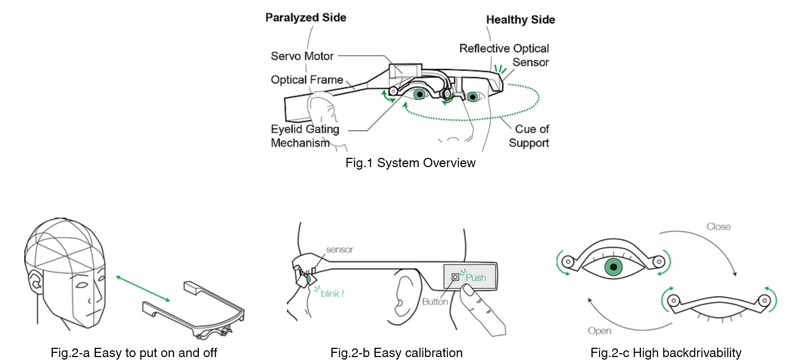

Facial Paralysis
This study proposes a novel facial wearable robot for supporting eyelid movements. The robot is designed for people with facial paralysis, especially on one side of the face. People with facial paralysis are not able to blink, which disturbs their concentration. Keep your eyes open as long as possible. After your patience, what do you feel ? Your eye get dry and feel uncomfortable, and you may hold your eye. The patients who can not blink are suffering from this problem all day long. This problem affects their concentration and they feel difficulty to drive a car, gaze at monitor longer and fine work and so on.

Proposal
We developed a robot system to support eyelid movements on the paralyzed side, based on the eye closure on the healthy side. The robot has a novel mechanism for supporting the eyelid control, made from soft material, which is called Eyelid Gating Mechanism (ELGM). ELGM deforms by simple rotational or linear actuation inputs and its deformation is customized to eyelid movements. Therefore, this robot can provide non-invasive and gentle support for eyelid movements.

Publications
Kozaki, Yuta, Naoki Matsushiro, and Kenji Suzuki. “A wearable soft robot for movement assistance on eyelid closure.” ROBOMECH Journal 5.1 (2018): 30.
Kozaki, Yuta, Naoki Matsushiro, and Kenji Suzuki. “Design of Soft Robotic Actuation for Supporting Eyelid Closure Movement.” 2018 40th Annual International Conference of the IEEE Engineering in Medicine and Biology Society (EMBC). IEEE, 2018.
小崎湧太, and 鈴木健嗣. “開眼・閉眼動作を支援する顔面装着型ロボットの提案 (第 2 報).” ロボティクス・メカトロニクス講演会講演概要集 2018. 一般社団法人 日本機械学会, 2018.
Yuta Kozaki, Kenji Suzuki, “A Facial Wearable Robot for Supporting Eye Opening and ClosureMovement”, IEEE/RSJ International Conference on Intelligent Robots and Systems, Canada, Sep, 2017
小崎湧太, 鈴木健嗣, 「柔軟素材の変形により開眼・閉眼動作を支援する顔面装着型ロボット」, 『ロボティクス・メカトロニクス講演会』, 2P2-O11, 福島
Yuta Kozaki, Kenji Suzuki, “A Facial Wearable Robot with Eyelid Gating Mechanism for Supporting Eye Blink”, International Symposium on Micro-NanoMechatronics and Human Science, Japan, Nov, 2016
小崎 湧太, 鈴木 健嗣, “瞬目動作を支援する顔面装着型ロボットの開発”, 第54回生体医工学会，富山，2016年 4月
Awards
小崎 湧太，鈴木健嗣「機械学会若手公演フェロー賞」，”柔軟素材の変形により開眼・閉眼動作を支援する顔面装着型ロボット”，ロボティクス・メカトロニクス 講演会，北九州， 2018年6月4日
小崎湧太, 「優秀修士論文賞」, ”随意的な開眼・閉眼動作を支援する顔面装着型ロボット”, 筑波大学大学院, システム情報工学研究科知能機能システム専攻修士論文発表会, つくば, 2017
Yuta Kozaki, Kenji Suzuki, Best Paper Award, “A Facial Wearable Robot with Eyelid Gating Mechanism for Supporting Eye Blink”, International Symposium on Micro-NanoMechatronics and Human Science, Japan, 2016
Media
日本経済産業新聞, 2016年9月7日